تحليل الفجوة المهنية وتوجيه الخريجين للتطوير المهني باستخدام تقنيات الذكاء الاصطناعي.
أحمد هيثم رضوان
ضمن مسار احتضان مشروع الـ elancer
الكلية الجامعية للعلوم التطبيقية - UCAS
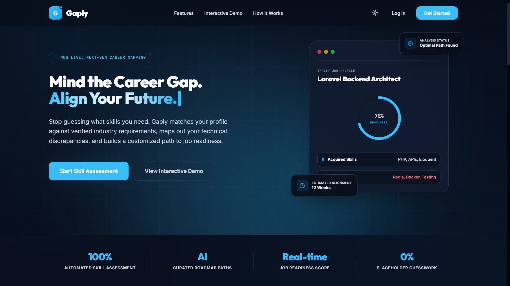
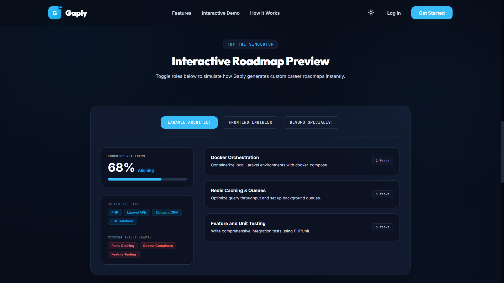
الواجهة الرئيسية التي توضح للمشاهدين حالته المهنية فور دخوله النظام بمقاييس دقيقة وحل مشكلة التشتت.
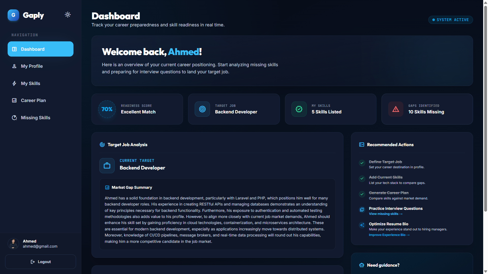
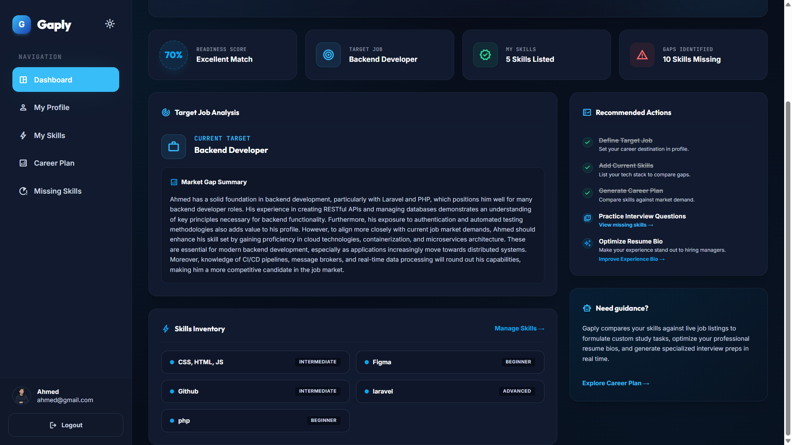
مساحة خاصة تتيح للمستخدم إدخال مهاراته ومستواها بدقة لتغذية نموذج التحليل المهني.
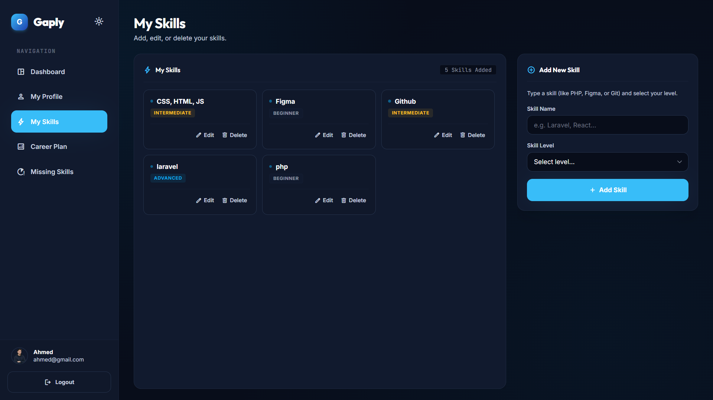
أداة ذكية بضغطة زر واحدة تأخذ صياغة الخبرات البسيطة للمستخدم وتعيد هيكلتها بأسلوب احترافي وجذاب للموظفين.
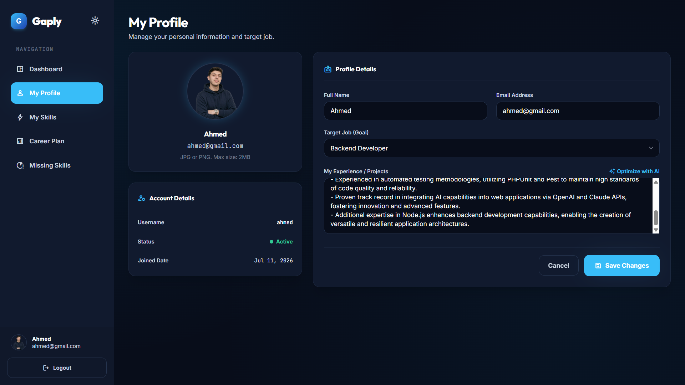
تقرير الفجوة المهنية المتكامل الذي يطرح حلاً منهجياً مقسماً على أسابيع مخصصة للتطوير.
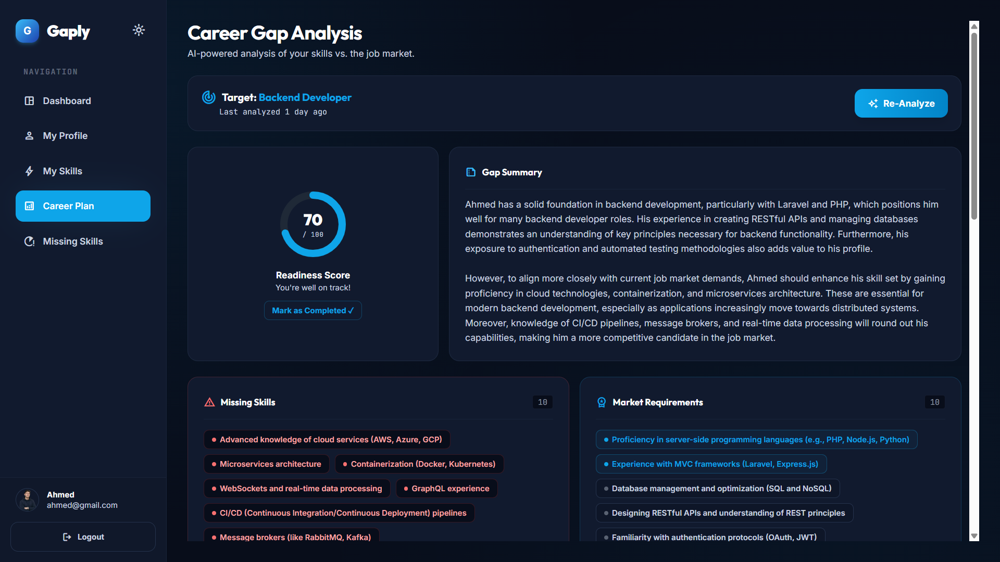
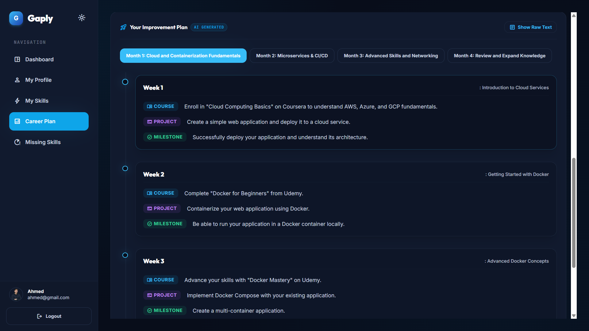
أداة تفاعلية تقوم بتوليد الأسئلة التقنية النموذجية المتوقعة وتوفر إجاباتها النموذجية لكل مهارة ناقصة.
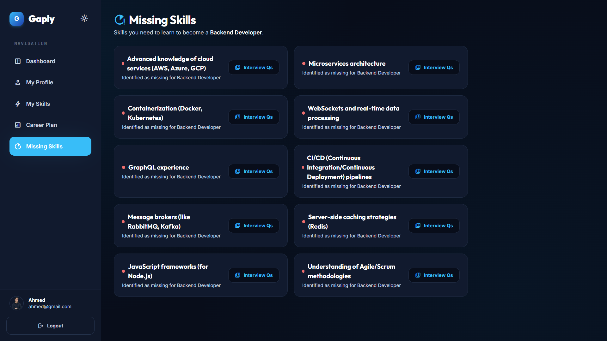
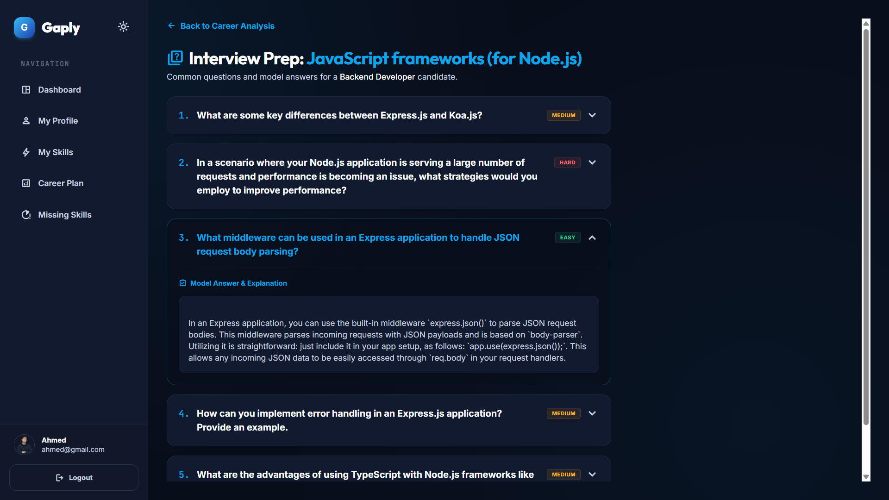
تم تطبيق بنية هندسية مرنة وفعالة تلتزم بأحدث ممارسات البرمجة القياسية في بيئة عمل Laravel.
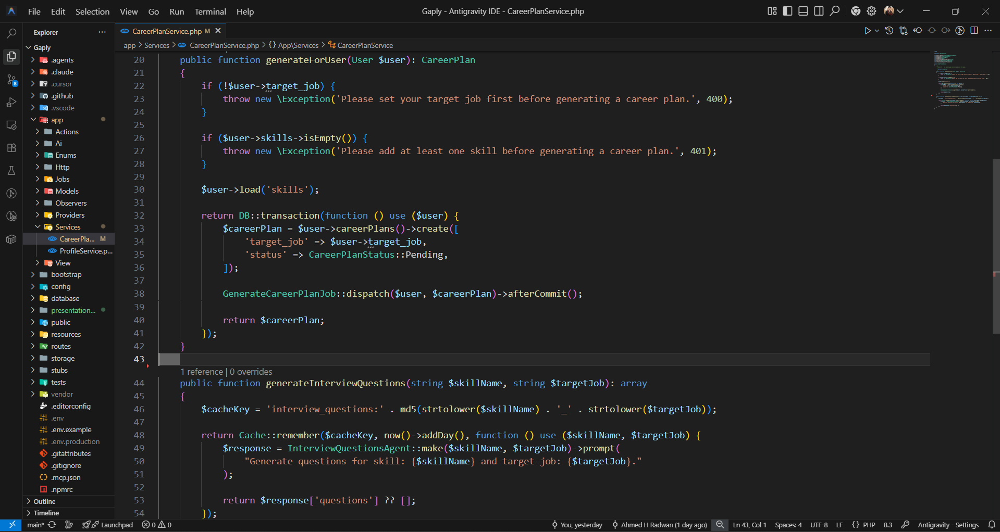
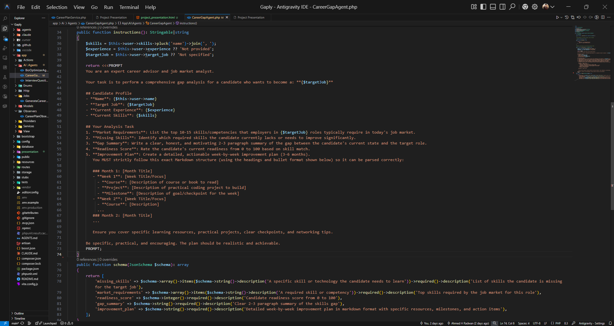
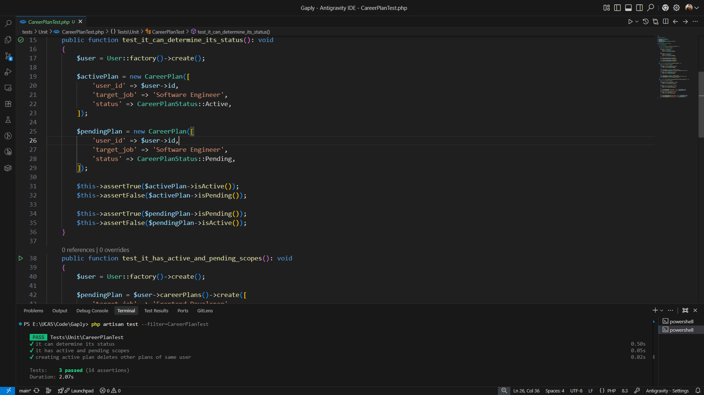